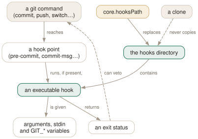

Day 18
Hooks
Programs git runs at fixed moments — local, uncloned, and only as trustworthy as your own checkout.
By the end of today you can
- write a pre-commit, commit-msg or pre-push hook that stops a bad commit, and read exactly what git passes it
- explain why hooks are never cloned, and what that means for a team that wants to share them
- use
core.hooksPathandgit hook rundeliberately, without silently disabling hooks you already had
An executable with a known name
A hook is a program git runs at a fixed moment — before a commit is written, after a checkout, before a push. There is no registration and no plugin API: git looks for an executable file with the hook's name in one directory, runs it with some arguments, and for the pre- hooks, treats a non-zero exit as “stop”. That is the entire mechanism, and githooks(5) is a list of names.
Every git init drops fourteen examples into .git/hooks/, all ending in .sample so that none of them runs. Rename one, or write your own, and make it executable:
$ ls .git/hooks
applypatch-msg.sample pre-commit.sample pre-receive.sample
commit-msg.sample pre-merge-commit.sample push-to-checkout.sample
fsmonitor-watchman.sample prepare-commit-msg.sample sendemail-validate.sample
post-update.sample pre-push.sample update.sample
pre-applypatch.sample pre-rebase.sample

The four you will actually write
pre-commit- No arguments. Runs before the message is asked for. Inspect the index with
git diff --cached; exit non-zero to abort. Skipped by--no-verify. prepare-commit-msg- Given the message file and its source (
message,template,merge,commit…). Edits the draft message. Not skipped by--no-verify. commit-msg- Given the path of the message file (
.git/COMMIT_EDITMSG). May rewrite it, or exit non-zero to reject. Skipped by--no-verify. pre-push- Given the remote's name and URL as arguments, and one line per ref on stdin. Exit non-zero to cancel the push.
A pre-commit hook that refuses a marker, and a commit-msg hook that enforces a capital letter:
#!/bin/sh
# .git/hooks/pre-commit
if git diff --cached -U0 | grep -q '^+.*DO NOT COMMIT'; then
echo "pre-commit: remove the DO NOT COMMIT marker first" >&2
exit 1
fi
#!/bin/sh
# .git/hooks/commit-msg
grep -qE '^[A-Z]' "$1" || { echo "commit-msg: subject must start with a capital" >&2; exit 1; }
$ git commit -qm 'lowercase subject'
commit-msg: subject must start with a capital
$ git commit -qm 'Clean up'
$ git commit --no-verify -m 'lowercase ok?'
[main cfbb862] lowercase ok?
pre-push reads one line per ref being pushed: local ref, local hash, remote ref, remote hash. A new branch has forty zeros as its remote hash; a deletion has zeros as its local hash.
$ git push origin main
pre-push args: origin ../h18.git
pre-push stdin: refs/heads/main 9217bb79… refs/heads/main 0000000000000000000000000000000000000000
What a hook can see
githooks(5): before running a hook, git changes to the root of the working tree (or to $GIT_DIR in a bare repository). So a hook always starts at the top, even when you committed from src/deep/. Where you actually were is in GIT_PREFIX. Here is every GIT_* variable a pre-commit hook saw, run from a subdirectory:
$ cd sub && git commit -qam 'Env dump'
GIT_AUTHOR_EMAIL=ada@example.com
GIT_AUTHOR_NAME=Ada Example
GIT_EDITOR=:
GIT_EXEC_PATH=/usr/libexec/git-core
GIT_INDEX_FILE=/…/h18/.git/index.lock
GIT_PREFIX=sub/
One more surprise: post-checkout is documented for git checkout and git switch, with a third argument of 1 for a branch checkout and 0 for a file checkout. git restore f fires it too, with 0. A post-checkout hook that rebuilds something expensive will run on every restore.
Hooks are local, on purpose
git clone copies objects and refs. It does not copy .git/hooks, and it does not copy .git/config. The git(1) SECURITY section gives the reason: configuration and hooks can run arbitrary commands, so because they are not cloned, it is safe to clone an untrusted repository and read it. It is not safe to run git inside a .git directory someone handed you — Day 21 comes back to that.
The usual shape is a versioned directory plus one per-clone setting:
$ git config core.hooksPath hooks # in this clone only
$ git hook run pre-commit # run it as git would
$ git hook run --ignore-missing pre-push # no error if absent
Today's habit
Take the check you most often forget — a linter, a formatter, a test that takes five seconds — and put it behind a pre-commit hook in the repository you spend most time in. Keep the logic in a script that lives in the repository; the hook is one line that calls it.
Tomorrow: plumbing — the commands and output formats that are meant to be scripted against, and the ones that are not.
New vocabulary
Commands
| Command | Does |
|---|---|
ls .git/hooks | See the sample hooks git init installed. None of them runs: they end in .sample. |
chmod +x .git/hooks/pre-commit | Enable a hook. A hook without the executable bit is ignored, with a hint. |
git commit --no-verify | Skip the pre-commit and commit-msg hooks for this commit. prepare-commit-msg still runs. |
git push --no-verify | Skip the pre-push hook for this push. |
git hook run <name> | Run a hook by hand, exactly as git would find it. Fails if it does not exist. |
git hook run --ignore-missing <name> | Run it if it exists; succeed quietly if not. For scripts. |
Options
| Option | Does |
|---|---|
core.hooksPath | Look for hooks in this directory instead of $GIT_DIR/hooks. Replaces it; does not add to it. |
GIT_INDEX_FILE | Set for a pre-commit hook: the index being committed. Unset it before running git in another repository. |
Drillsdo these in a real terminal, today
Self-check
Answer out loud first, then unfold.
Your pre-commit hook refuses commits whose staged diff contains DO NOT COMMIT. You remove the marker, stage the file, and the hook still refuses. Why?
Because the hook grepped the whole of git diff --cached, and removing the marker produces a diff line -x DO NOT COMMIT. The hook matched the deletion. This happened while writing this lesson.
Match only added lines: git diff --cached -U0 | grep -q '^+.*DO NOT COMMIT'. The general lesson is that a hook sees text, not intent, and has to be tested against the removal case as well as the adding one.
The team adds a hooks/ directory to the repository. A new colleague clones and commits a secret the pre-commit hook would have caught. What did the team assume, and why is git designed not to allow it?
That cloning installs hooks. It never does: git clone copies objects and refs, not .git/hooks or .git/config. The git(1) SECURITY section explains why — hooks and configuration can run arbitrary commands, so a clone that brought them along would mean anyone could run code on your machine by getting you to clone.
Every colleague has to opt in, typically with git config core.hooksPath hooks in their own clone. And a check that really must hold belongs in CI, where nobody can --no-verify past it.
You set core.hooksPath globally to a directory of personal hooks. A week later, the project's own commit-msg hook in .git/hooks has stopped running. Why?
core.hooksPath replaces the hooks directory; it is not a search path. Once it is set, git looks only there, and .git/hooks is ignored in every repository that inherits the setting. This is why this course puts no hooks configuration in ~/.gitconfig. Set it per repository (git config core.hooksPath hooks) or, if you want global hooks, have each one chain to the repository's own hook if it exists.
A pre-commit hook does cd ~/other-repo && git status and gets nonsense about staged files that do not exist there. What leaked?
GIT_INDEX_FILE. For pre-commit, git 2.52 exports it pointing at .git/index.lock of the repository being committed, and any git command the hook runs will use that index — in whatever repository it happens to be in. githooks(5) warns about this: unset GIT_INDEX_FILE (and GIT_DIR, GIT_WORK_TREE if set) before working on a foreign repository, or use env -u GIT_INDEX_FILE git -C ~/other-repo status.
Cheat sheet
# .git/hooks/<name>, executable; non-zero exit aborts a pre- hook
pre-commit # no args; inspect: git diff --cached -U0
prepare-commit-msg # $1 msg file, $2 source; NOT skipped by --no-verify
commit-msg # $1 msg file; reject or rewrite
pre-push # $1 remote $2 url; stdin: lref loid rref roid
git commit --no-verify # skip pre-commit + commit-msg
git config core.hooksPath hooks # per clone; REPLACES .git/hooks
git hook run [--ignore-missing] NAME
# hooks run at the top level; cwd you came from is $GIT_PREFIX
# never cloned: every hook here is one you installed
Everything through Day 18
Commands
| Command | Does |
|---|---|
git init -b main | Create an empty repository whose first branch is main. |
git hash-object <file> | Print the object name the file's contents would get. Writes nothing without -w. |
git cat-file -t <object> | Print an object's type: blob, tree, commit or tag. |
git cat-file -p <object> | Pretty-print an object's contents. The one command that shows what git really stores. |
git cat-file -s <object> | Print an object's size in bytes. |
git ls-tree -r <tree-ish> | List every blob in a tree, recursively, with mode and hash. |
git rev-parse HEAD | Turn a name into the full hash it currently means. |
git count-objects -v | Count loose and packed objects and the disk they use. |
git status -s | Show each changed path with two columns: index vs HEAD, then working tree vs index. |
git add <path> | Copy the file's current contents into the index. Writes the blob immediately. |
git add -p | Walk through each hunk and choose which ones go into the index. |
git diff | Show what differs between the index and the working tree — what add would stage. |
git diff --staged | Show what differs between HEAD and the index — what commit would record. |
git restore <path> | Overwrite the working-tree file with the index version. Discards unstaged edits. |
git restore --staged <path> | Reset the index entry to HEAD's version. The working tree is untouched. |
git commit [-a] | Turn the index into a tree, wrap it in a commit, move the branch to it. -a first stages every modified tracked file (never untracked ones). |
git rm --cached <path> | Remove a path from the index only; the file stays on disk, now untracked. |
git branch | List local branches; * marks the one HEAD names. |
git branch -v | List branches with the commit each points at and its subject line. |
git branch <name> | Create a branch at HEAD without switching to it. |
git switch <branch> | Point HEAD at a branch and update the index and working tree to its commit. |
git switch -c <name> | Create a branch at HEAD and switch to it in one step. |
git switch - | Switch back to the branch you were on before. |
git switch --detach <commit> | Point HEAD directly at a commit, with no branch in between. |
git branch -d <name> | Delete a branch, refusing unless it is merged into its upstream (or into HEAD, if it has none). |
git branch -D <name> | Delete a branch unconditionally. |
git branch -m <old> <new> | Rename a branch. |
git merge <branch> | Bring the branch's history into the current one: fast-forward if possible, else a merge commit. |
git merge --ff-only <branch> | Merge only if it is a fast-forward; otherwise refuse and change nothing. |
git merge --no-ff <branch> | Always create a merge commit, even when a fast-forward was possible. |
git merge --abort | Give up a conflicted merge and restore the state before it started. |
git merge-base A B | Print the best common ancestor of two commits — the version a merge compares against. |
git ls-files -u | List the unmerged index entries: one line per stage per conflicted path. |
git show :1:<path> | Show the base version of a conflicted file. :2: is yours, :3: theirs. |
git checkout --conflict=merge <path> | Recreate the conflict markers in a file you mangled; =zdiff3 works too. |
git clone <url> | Copy a repository: all objects, its branches as origin/*, and one local branch checked out. |
git remote -v | List remotes with their fetch and push URLs. |
git remote add <name> <url> | Register another repository under a short name. |
git fetch | Download new objects and move the remote-tracking refs. Never touches your branches or files. |
git pull | Fetch, then integrate the upstream into the current branch. |
git push | Send the current branch's commits and move the branch of the same name on the remote. |
git push -u origin <branch> | Push and record origin/<branch> as this branch's upstream. |
git push origin --delete <branch> | Delete a branch on the remote. |
git branch -vv | List branches with their upstream and ahead/behind counts. |
git log --oneline --graph --all | Draw every branch's history, one line per commit. |
git log -p | Show each commit's diff against its parent. |
git log --stat | Show which files each commit touched, and how much. |
git log --author=<re> --since=<date> | Keep only commits whose author matches, from a date onwards. |
git log -- <path> | Keep only commits that changed the path. The -- separates paths from revisions. |
git log --follow -- <file> | Follow one file's history back through renames. |
git log -S<string> | Pickaxe: keep commits that change how many times the string occurs. |
git log -G<regex> | Keep commits whose diff adds or removes a line matching the regex. |
git log -L :<func>:<file> | Show the history of one function (or -L 10,20:file for a line range). |
git show <commit> | Show one commit: message and diff. |
git blame -w -C <file> | Annotate each line with its last commit, ignoring whitespace and seeing moves between files. |
git rev-parse --verify <rev> | Resolve an expression to one object name, or fail. The checker for everything today. |
git rev-parse --abbrev-ref <rev> | Print the short ref name an expression means: @{u} becomes origin/main. |
git rev-parse --symbolic-full-name <rev> | Print the full ref name, e.g. refs/remotes/origin/main. |
git log A..B | List commits reachable from B but not from A: what B has that A lacks. |
git log --left-right A...B | List commits on either side but not both, marked < or >. |
git diff A...B | Diff from the merge base of A and B to B: what B changed since they split. |
git show <rev>:<path> | Print a file as it was in any commit, without checking anything out. |
git show :<path> | Print the version of a file currently staged in the index. |
git commit --amend | Replace the last commit with a new one built from the current index. Opens the editor. |
git commit --amend --no-edit | Amend, keeping the message: for the file you forgot to add. |
git reset --soft <rev> | Move the branch to rev. Index and working tree untouched. |
git reset <rev> | Move the branch and reset the index to it (--mixed, the default). Working tree untouched. |
git reset --hard <rev> | Move the branch, and overwrite index and working tree to match. Destroys uncommitted work. |
git reset -- <path> | Copy path from HEAD into the index: unstage. The branch does not move. |
git restore --source=<rev> <path> | Overwrite a working-tree file with its version from any commit. |
git revert <commit> | Make a new commit that undoes commit. The safe undo for published history. |
git clean -n | List the untracked files -f would delete. Add -d for directories, -x for ignored files. |
git clean -fd | Delete untracked files and directories. Ignored files survive unless -x. |
git rebase <upstream> | Replay the commits in <upstream>..HEAD on top of upstream. With no argument, uses @{u}. |
git rebase --onto <new> <old> [<branch>] | Replay <old>..<branch> on top of new: transplant part of a branch. |
git rebase --continue | After resolving and git adding a conflict, commit it and go on. |
git rebase --skip | Drop the commit that stopped, and go on. |
git rebase --abort | Put the branch back exactly where it was before the rebase started. |
git push --force-with-lease | Overwrite the remote branch only if it is still where your remote-tracking branch says. |
git push --force-if-includes | With the lease: also refuse if the remote tip was fetched but never integrated locally. |
git rebase -i <base> | Open the todo list for <base>..HEAD in your editor, then run it. |
git rebase --edit-todo | Re-open the remaining todo list while a rebase is stopped. |
git commit --fixup=<commit> | Commit the staged change as fixup! <subject>, to be melted into commit later. |
git commit --fixup=amend:<commit> | Like --fixup, but the squash also replaces the target's message. |
git rebase -i --autosquash <base> | Move every fixup!/squash!/amend! commit under its target and mark it. |
git rebase -x '<cmd>' <base> | Run cmd after every replayed commit; stop at the first failure. |
git range-diff <base> <old> <new> | Pair up the commits of two versions of a branch and show how each changed. |
git reflog | List where HEAD has pointed, newest first, as HEAD@{n} entries. Short for git reflog show HEAD. |
git reflog show <branch> | List where one branch has pointed. Its entries are <branch>@{n}. |
git reflog --date=iso | Show each entry's time instead of its index: main@{2026-09-25 09:00:00 +0200}. |
git log -g | Walk a reflog with the full git log formatting options. |
git reset --hard ORIG_HEAD | Undo the last reset, merge or rebase: go back to where it started. |
git branch <name> <commit> | Give a recovered commit a name again, so it is safe for good. |
git fsck --unreachable | List objects nothing refers to — not even a reflog. Where dropped stashes are found. |
git config list --show-origin --show-scope | List every setting in effect, with the file and scope it came from. |
git config get <name> | Print the value git will use. Exit status 1 if unset. |
git config set [--global] <name> <value> | Write a setting, to the repository's .git/config unless told otherwise. |
git config unset [--global] <name> | Remove a setting from one file. Exit status 5 if it was not there. |
git config edit --global | Open ~/.gitconfig in your editor. |
git -c <name>=<value> <cmd> | Override one setting for one command, above every file. |
git help <alias> | Print what an alias expands to. |
git stash push -m <msg> | Save staged and unstaged changes to tracked files as a stash entry, and clean the tree. |
git stash push -u | Include untracked files. -a also takes ignored ones. |
git stash push --staged | Stash only what is in the index. |
git stash list | List entries; stash@{0} is the newest. |
git stash show -p [stash@{n}] | Show an entry as a patch. Add --include-untracked to see its untracked files. |
git stash apply [--index] | Reapply an entry and keep it. --index restores what was staged as staged. |
git stash pop [--index] | Apply, and drop the entry only if it applied cleanly. |
git stash drop [stash@{n}] | Delete one entry. |
git stash branch <name> | Create a branch at the commit the stash was made on, apply it there, drop it. |
git worktree add <path> [-b <new>] [<branch>] | Check out a branch in a new directory that shares this repository. |
git worktree list | List every working tree with its HEAD and branch. |
git worktree remove <path> | Delete a clean worktree. git worktree prune forgets ones you deleted by hand. |
git check-ignore -v <path> | Print the file, line and pattern that decides whether path is ignored. |
git check-ignore -v --no-index <path> | The same for a path that is already tracked. |
git status --ignored | Also list ignored files, marked !!. |
git ls-files -o -i --exclude-standard | List every untracked file the ignore rules are hiding. |
git add -f <path> | Add a file despite an ignore rule. |
git check-attr -a -- <path> | Print every attribute set on a path. |
git ls-files --eol | Show line endings in the index and working tree, and the attribute in force. |
git add --renormalize . | Re-apply the current text/eol attributes to every tracked file in the index. |
git archive HEAD | Write a tarball of a commit, leaving out export-ignore paths. |
git cherry-pick -x <commit> | Apply one commit's change on top of HEAD as a new commit, noting the original in the message. |
git cherry-pick A..B | Pick every commit in the range, oldest first. A itself is excluded. |
git cherry-pick --continue | --skip | --abort | Resume after resolving, drop the current commit, or return to where you started. |
git log --cherry-mark --left-right A...B | Mark commits on each side with = when the other side has an equivalent patch. |
git tag -a v1.2 -m <msg> [<commit>] | Create an annotated tag: a tag object with tagger, date and message. |
git tag v1.2 [<commit>] | Create a lightweight tag: just a ref. |
git tag -l 'v1.*' | List tags matching a glob. |
git push origin <tag> | Publish one tag. Tags are not pushed with branches by default. |
git push origin --delete <tag> | Delete a tag on the remote. |
git describe [--tags] [--dirty] [--always] | Name HEAD relative to the nearest annotated tag, e.g. v1.1-1-gc6dcec7. |
git bisect start <bad> <good>... | Begin a search between a known-bad and one or more known-good commits. |
git bisect good | bad | Mark the checked-out commit, and move to the next midpoint. |
git bisect skip | This commit cannot be tested; pick a nearby one instead. |
git bisect run <cmd> [args] | Test every step automatically: exit 0 good, 1–127 bad, 125 skip, anything else abort. |
git bisect reset | End the session and return to the branch you started on. |
git bisect log | Print the session so far as a replayable script. |
git bisect replay <file> | Re-run a saved log, e.g. after correcting one wrong answer. |
git bisect view --oneline | List the commits still in the running. |
git bisect terms | Show the words in use for the two states. |
git merge -X ours <branch> | Merge normally, but settle each conflicting hunk in favour of this side. Clean hunks from the other side still land. |
git merge -s ours <branch> | Record a merge that keeps this tree exactly. The other branch's changes are discarded. |
git checkout --ours <path> | During a conflict, take stage 2 for that path. In a rebase, stage 2 is the upstream. |
git checkout --theirs <path> | Take stage 3 for that path. In a rebase, stage 3 is your own commit being replayed. |
git checkout -m <path> | Re-create the conflict markers in a file you have mangled or resolved wrongly. |
git log --merge | During a conflict, list only the commits on either side that touch the conflicted paths. |
git diff AUTO_MERGE | Show only what you have edited since git wrote the conflicted files. |
git rerere status | List paths whose conflict rerere has recorded a preimage for. |
git rerere diff | Show the resolution you are about to teach rerere. |
git rerere forget <path> | Drop a recorded resolution that turned out to be wrong. |
ls .git/hooks | See the sample hooks git init installed. None of them runs: they end in .sample. |
chmod +x .git/hooks/pre-commit | Enable a hook. A hook without the executable bit is ignored, with a hint. |
git commit --no-verify | Skip the pre-commit and commit-msg hooks for this commit. prepare-commit-msg still runs. |
git push --no-verify | Skip the pre-push hook for this push. |
git hook run <name> | Run a hook by hand, exactly as git would find it. Fails if it does not exist. |
git hook run --ignore-missing <name> | Run it if it exists; succeed quietly if not. For scripts. |
Options
| Option | Does |
|---|---|
user.name / user.email | Set the identity written into every commit's author and committer lines. |
init.defaultBranch | Name the first branch of every new repository. |
commit.verbose | Show the staged diff below the message in the commit editor. |
branch.sort | Set the default order of git branch; -committerdate puts recent work first. |
merge.conflictStyle | Choose the marker style: merge (default), diff3 or zdiff3. |
pull.ff | only: let git pull fast-forward and refuse anything else. |
push.autoSetupRemote | Make a plain git push of a new branch create it upstream and track it. |
fetch.prune | Delete remote-tracking refs whose branch was deleted on the remote, on every fetch. |
diff.colorMoved / diff.colorMovedWS | Colour moved blocks differently from added and removed ones; allow-indentation-change still recognises a re-indented move. |
push.useForceIfIncludes | Make every --force-with-lease behave as if --force-if-includes were given. |
rebase.autoSquash | Make rebase -i autosquash by default. Interactive mode only. |
rebase.updateRefs | Also move any branch that points into the rebased range (--update-refs). |
gc.reflogExpire | Age after which reflog entries are pruned. Default 90 days. |
gc.reflogExpireUnreachable | Same, for entries no longer reachable from the ref's tip. Default 30 days. |
core.logAllRefUpdates | Whether reflogs are kept. True by default with a working tree, false in a bare repository. |
includeIf."gitdir:<dir>/".path | Read another config file only for repositories under dir. |
alias.<name> | Define git <name>. A leading ! makes it a shell command. |
GIT_CONFIG_GLOBAL | Read this file instead of ~/.gitconfig; /dev/null for none. |
GIT_PREFIX | Set for shell aliases: the directory you ran them from, relative to the top level. |
core.excludesFile | Your personal ignore file. Defaults to ~/.config/git/ignore — usually leave it. |
diff.<driver>.textconv | A program that turns a file into text for diffs, used by paths with diff=driver. |
tag.sort | Default ordering for git tag -l; version:refname sorts v1.10 after v1.9. |
push.followTags | Also push annotated tags that point into the history being pushed. |
--first-parent | On bisect start: follow only first parents, so merged side branches count as one step. |
--term-old=<w> --term-new=<w> | On bisect start: use your own words instead of good/bad. |
rerere.enabled | Record every conflict and its resolution, and replay them on the next identical conflict. |
rerere.autoUpdate | Stage a path once rerere has resolved it, instead of leaving it for you to git add. |
core.hooksPath | Look for hooks in this directory instead of $GIT_DIR/hooks. Replaces it; does not add to it. |
GIT_INDEX_FILE | Set for a pre-commit hook: the index being committed. Unset it before running git in another repository. |